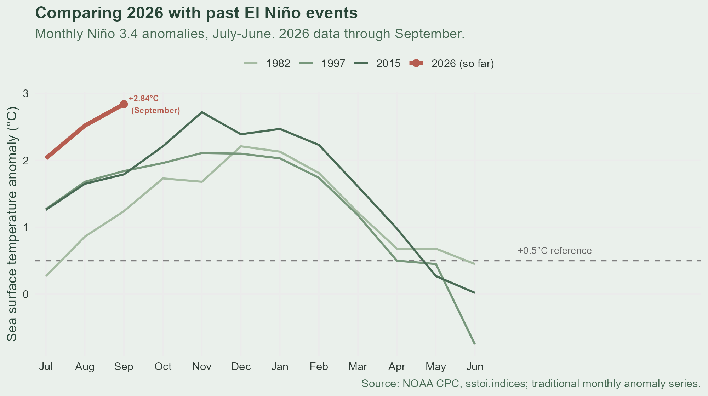
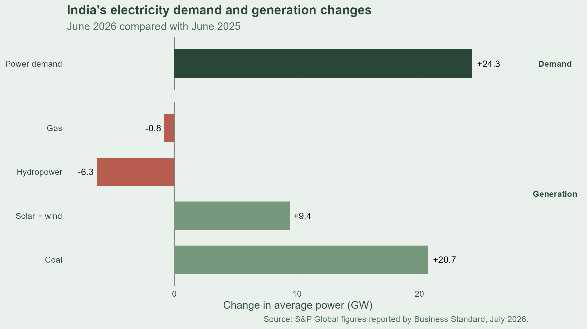

One ocean pattern, worldwide effects
What is El Niño?
Periodic warming of the central and eastern tropical Pacific that influences weather patterns around the world.
How do we measure it?
The Niño 3.4 index tracks sea surface temperature anomalies in a specific region of the tropical Pacific.
Why does it matter?
El Niño can influence rainfall patterns, including India’s monsoon, with potential effects on hydropower and electricity systems.
Comparing past El Niño events
1. Select the data
Downloaded NOAA’s monthly Niño 3.4 data and selected the temperature anomaly column.
nino <- raw |> select(YR, MON, nino34 = ANOM.3)
2. Align historical events
Organized the data from July through June to compare the same months across different El Niño events.
event_data <- nino |> filter(YR %in% c(1982, 1997, 2015, 2026))
3. Visualize the results
Used ggplot2 to create a line chart comparing three historical events with 2026.
ggplot(event_data, aes(x = month, y = nino34, color = event)) + geom_line()
What the Graph Reveals

Monthly Niño 3.4 temperature anomalies (°C). 2026 data available through September.
India’s Electricity System

Change in average power, June 2026 vs. June 2025 (GW). Source: S&P Global, reported by Business Standard, July 2026.
From Climate Data to Energy Planning
Identify patterns
Use data to explore climate trends and compare historical events.
Connect the dots
Understand how rainfall patterns can affect water availability and hydropower generation.
Inform decisions
Use evidence to support climate-informed energy planning and grid reliability.